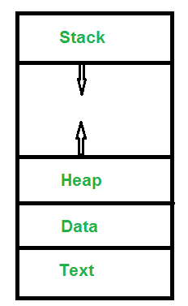
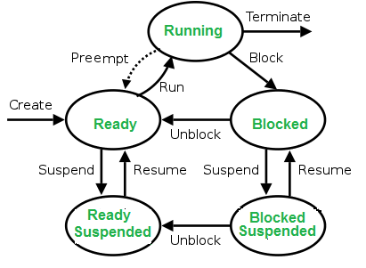

INTRODUCTION AND PROCESS MANAGEMENT
MAINTAINER: SANATAN SHRIVASTAVA
2018KUCP1096@IIITKOTA.AC.IN

04 September 20XX
The OS controls and coordinates the use of hardware among the various application programs for the various users.
It provides an environment where other applications can work.
User’s view of OS:
- Personal Computer
It is more about ease of access
Personal Computer - Less about resource utilization. - Mainframe - used for resource utilization rather than user experience, hence is mostly CMD based, terminal etc.
- Workstation computers’ - OS have both the resource utilization and the user experience.
System’s view of OS:
- Only view of OS by system is as a RESOURCE ALLOCATOR.
Definition of OS:
The controlling and allocating resources can be exhaustively brought together into one piece of software, which is commonly known as an Operating System.
It also controls the execution of application programs and act as an interface between applications and hardware.
Kernel: The central part of the operating system.
Bootstrap is the initial program needed to run the operating system.
- * Instruction cycle with interrupt *
- Start
- Fetch Instruction
- Execute -> (interrupt enabled) -> HALT
- Execute interrupt
- STEP - 2 => FETCH INSTRUCTION
- REPEAT from step 2
Objectives of OS:
* Convenience
* Efficient
* Ability to Evolve
- Power On Self Test is performed by a software routines immediately after a computer system or any other digital device is turned on.
- POST ---> BootStrap Loader ---> transfers OS to HD.
(Program labelled in ROM)
* Bootstrap loader transfers OS from Main Memory to Hard Disk.
* Init: it is the function which is called, by the OS immediately after the OS is loaded.
Types of OS:
Multitasking OS -
When more than one program is in the main memory ready to be processed, and they are executed in such a manner that when a programme is blocked due to some reasons, another programme is scheduled for execution, hence it helps in CPU utilization.
Job A |-----------------------------------|
Job B |-----------------------------------|
This is how we + the CPU utilization.
Multiprogramming OS -
* Execution is in a time sharing manner.
Multi Processing OS -
* When there is more than 1 preprocessor or processor in the system, it is called a multi-pro OS.
Real Time OS -
* When deadline associated with an OS, called a real time OS
Real Time OS
______|______
Soft RT OS Hard RT OS
Soft OS: Deadlines can be broken.
Hard OS: Deadlines cannot be broken.
Process Management:
Process: A process is a program written by the user and is executed under OS.
* A process is a program under execution.
- Process is an active entity: it is currently running
- Program is a passive entity: it becomes active while running.
- A single program can create multiple processes.
* Stack - The Stack contains the temporary data, such as function parameters, returns addresses, and local variables.
* Heap - Dynamically allocated memory to process during run time.
* Data - contains the global police.
* Text Section - Code of the program.
Attributes of Process:
- Process id
- Process State
- Program Counter
- Priority
- General Purpose Register
- List of Open Files
- List of Open Devices
- Security Protection
Process States:
New - To create a new process; present in secondary memory
Ready - They are ready to run in the main memory
Run - One of the processes has to be chosen from the process pool for running it.
Wait - if the process has to be read or written, so it is in wait state.
Complete/termination - Process is killed, and PCB is deleted.
Suspend Ready - As the multiple processes in the main memory and suddenly a new process of very high priority arrives, then one process has to be moved to secondary memory, so that the high process memory gets executed.
Suspend Block - Instead of suspending the process which are ready, we suspend the process which are block or are in wait state.
If a process is in suspended wait/block, and has finished I/O, then it is ready to be pushed into secondary memory for the suspended ready.